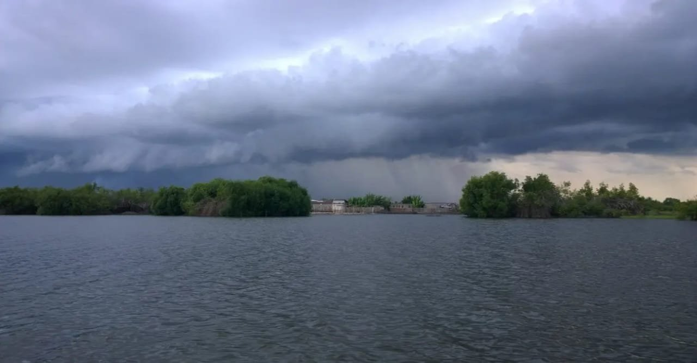
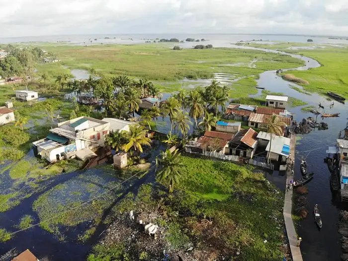

Recherche
Télédétection, SIG, dynamique de l'occupation du sol, vulnérabilité environnementale.
Une plateforme scientifique et cartographique dédiée à la recherche, à la connaissance et à la valorisation des écosystèmes humides du Bénin.
Positions indicatives, en attente de validation des limites officielles.



Les publications vérifiées seront ajoutées avec auteur, année et source.
L'OZHB est une initiative scientifique et cartographique qui vise à faire connaître et préserver les écosystèmes humides du Bénin, par la géomatique, la télédétection et la recherche environnementale.
HONFO Elfried Elisée
Porteur du projet. Spécialiste en géo-information, SIG, cartographie et télédétection. Licence en Géomatique (Centre universitaire d'Adjarra), Master 2 en cours à l'Institut UNESCO GAGIEE.
Fiches en cours de documentation : superficies, dates de désignation, espèces et statuts seront ajoutés après vérification des sources officielles.
Photographies du porteur du projet. Les lieux exacts (localité, commune) sont à confirmer avant publication.
Télédétection, SIG, dynamique de l'occupation du sol, vulnérabilité environnementale.
Faune, flore et habitats, avec noms scientifiques et statuts UICN référencés.
Pollution, remblaiement, urbanisation, espèces envahissantes, érosion et inondations.
Restauration, sensibilisation, protection des berges et gestion durable.